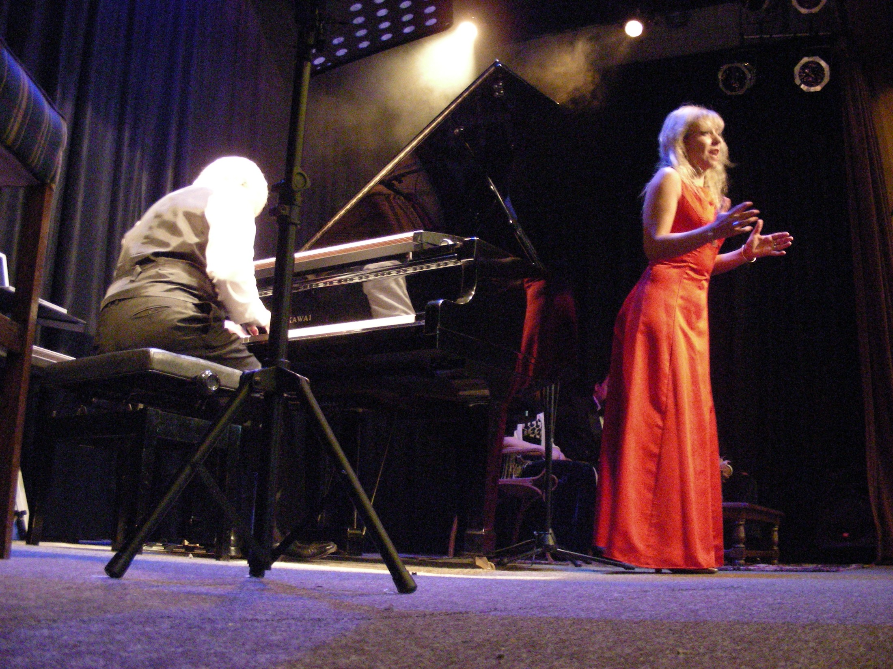
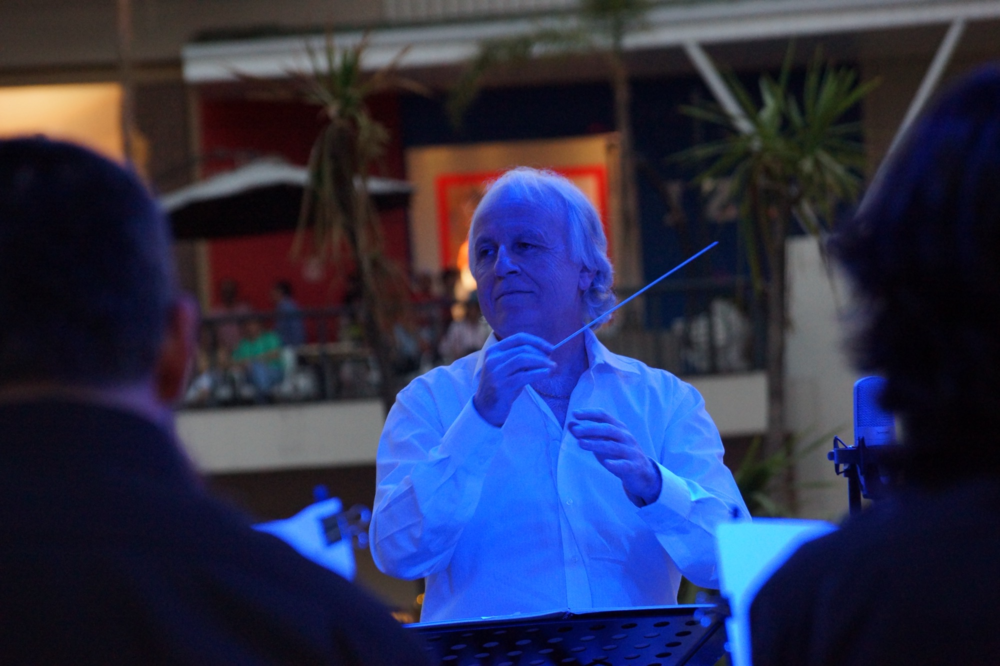
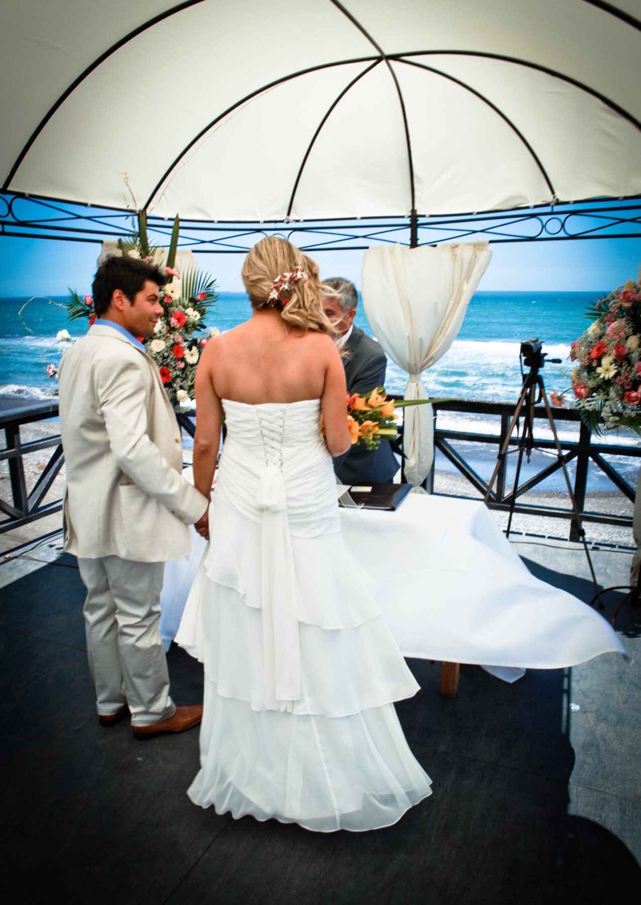
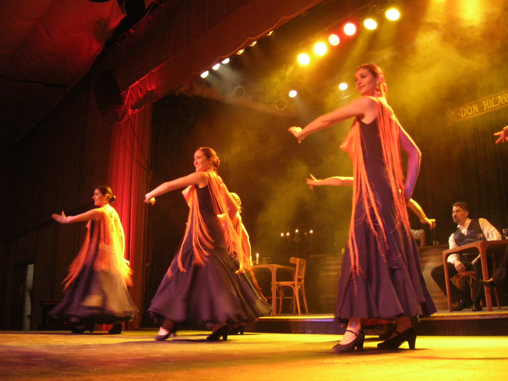

Solistas, ensambles y producciones a medida
Solistas, cantantes, instrumentistas, grupos y ensambles para ceremonias, cócteles, cenas, bodas, presentaciones temáticas, producciones teatrales, matrimonios, funerales y flashmob.

Musicale
Música presencial para empresas, instituciones, matrimonios, conciertos y producciones especiales. Una experiencia musical exclusiva, con arreglos propios, formatos flexibles y una sonoridad amplia, rica y sofisticada.
Lo que hacemos
Creamos soluciones musicales con presencia escénica, repertorio cuidado y una lectura precisa del contexto para que la música sea un protagonista más de su evento.
Solistas, cantantes, instrumentistas, grupos y ensambles para ceremonias, cócteles, cenas, bodas, presentaciones temáticas, producciones teatrales, matrimonios, funerales y flashmob.
Grandes instituciones públicas y privadas a nivel nacional y centros de eventos.
Propuesta comercial
Quiénes somos
Fernando Antireno · Músico, pianista, director de orquesta y compositor
Formado en Composición en la Facultad de Artes de la Universidad de Chile, Fernando Antireno une creación, interpretación, dirección y producción musical. En Musicale, esa trayectoria se transforma en propuestas elegantes, flexibles y cuidadosamente diseñadas para cada contexto.
"
La música no solo acompaña un evento: puede definir su atmósfera, su identidad y el recuerdo que deja en quienes lo viven.

Diferencial artístico
El diferencial de Musicale está en cómo se construye la experiencia: interpretación multiinstrumental, arreglos propios, una sonoridad amplia y sofisticada, y la capacidad de adaptarse al tipo de evento sin perder presencia artística.
Más registros, matices y colores dentro de una misma propuesta.
Repertorio trabajado según el contexto, el cliente y la atmósfera buscada.
La combinación entre interpretación, producción y arreglos permite reemplazar gran parte de una formación tradicional y aún así mantener una sonoridad amplia, rica y sofisticada.
Formatos que se ajustan al espacio, al ambiente y al nivel de protagonismo musical.
Categoría sin rigidez de formato ni operación innecesariamente compleja.
Solista, con cantantes o con músicos invitados, siempre con coherencia estética.
Servicios principales
Cuatro líneas claras para convertir música, presencia y repertorio en una experiencia a medida.
01
Ceremonias, cócteles, cenas y momentos especiales con repertorio sensible, elegante y adaptado a cada etapa del día.
02
Ambientes sofisticados para cócteles, cenas, lanzamientos, aniversarios y encuentros con clientes.
03
Una propuesta artística diferenciadora para cenas especiales, programación cultural, eventos privados y huéspedes.
04
Programas artísticos con identidad propia para conciertos, ciclos culturales, funciones especiales y eventos temáticos.
Repertorio y estilos
El repertorio se define según el tipo de evento y la atmósfera que se quiere crear.
Ceremonias, recepciones formales y conciertos de atmósfera refinada.
Emocional, reconocible y de alto impacto para galas y programas temáticos.
Cenas elegantes, celebraciones mediterráneas y experiencias internacionales.
Románticos, sofisticados y con presencia escénica.
Entradas, firmas, rituales, salidas y momentos de emoción.
Programas especiales para instituciones, hoteles, marcas y privados.
Elegancia musical para acompañar sin invadir.
Navidad, aniversarios y fechas especiales.
Galería y videos
Presencia escénica, atmósfera y momentos reales de la propuesta Musicale.


Una síntesis de presencia escénica, repertorio y nivel interpretativo.
Presentación audiovisual disponible próximamenteCeremonia, emoción y música para los momentos clave.
Solicitar presentación directaGalas, recitales y puestas temáticas con dirección musical.
Ver registro completoClientes y confianza
Marcas, instituciones y espacios que valoran una propuesta artística sobria y confiable.


“La música logró exactamente lo que queríamos: elegancia, emoción y una presencia artística que se sintió en todo el evento.”
Matrimonio Matrimonio“Necesitábamos una propuesta sobria, de alto nivel y fácil de implementar. Musicale resolvió muy bien la atmósfera de la noche.”
Evento corporativo Evento corporativo“El formato se adaptó perfecto al lugar y aportó un valor real a la experiencia. Se sintió distinto y muy bien ejecutado.”
Hotel o viña Hotel o viñaCierre comercial
Definamos el formato, el repertorio y la presencia musical ideal para crear una atmósfera memorable.
Contacto
Complete el formulario o escríbanos directo por WhatsApp.
Perfil oficial disponible próximamente
Video destacado
Un registro real de la propuesta escénica y musical de Musicale en formato lírico.